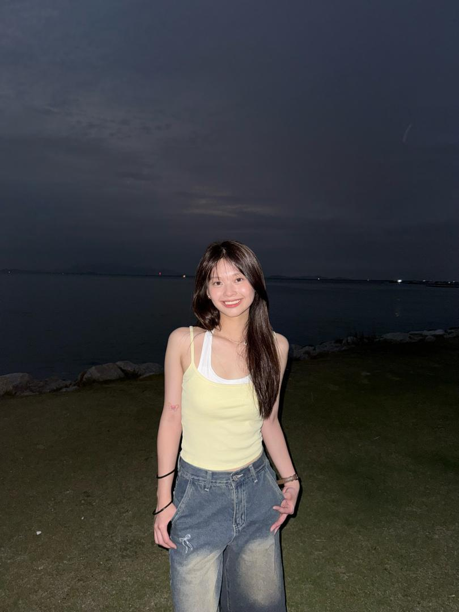

Hi, I’m Yi Xuan! I’m 22 years old.I’m a pretty chill and easygoing person. I enjoy simple things in life, like watching movies,scrolling social media, listening to music, or just hanging out with friends. Sometimes I can be a bit quiet at first, but once I get comfortable, I actually talk quite a lot.
I like making people laugh and I enjoy positive vibes. I’m also the type of person who overthinks small things but still tries to stay optimistic. I believe everything happens for a reason, so even if things don’t go perfectly, I’ll just take it as a learning experience.
Overall, I’m just someone who’s trying to enjoy life, improve little by little, and create goodmemories along the way.
